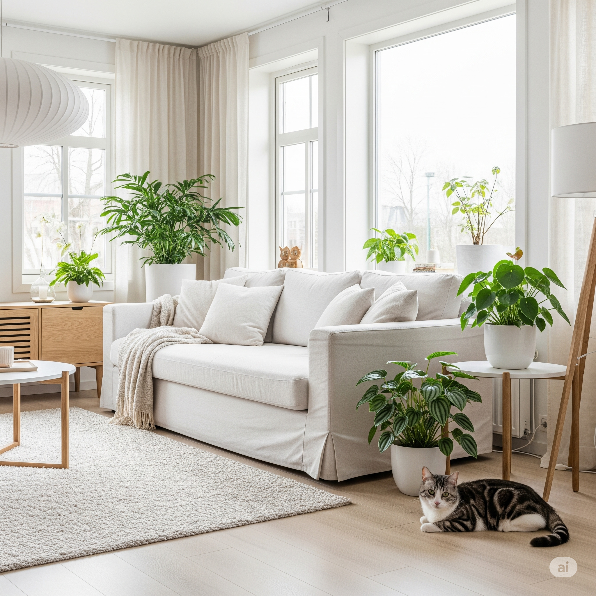
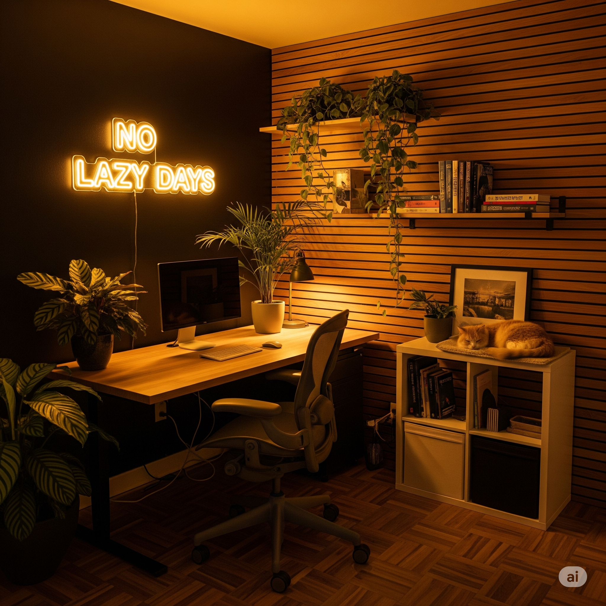
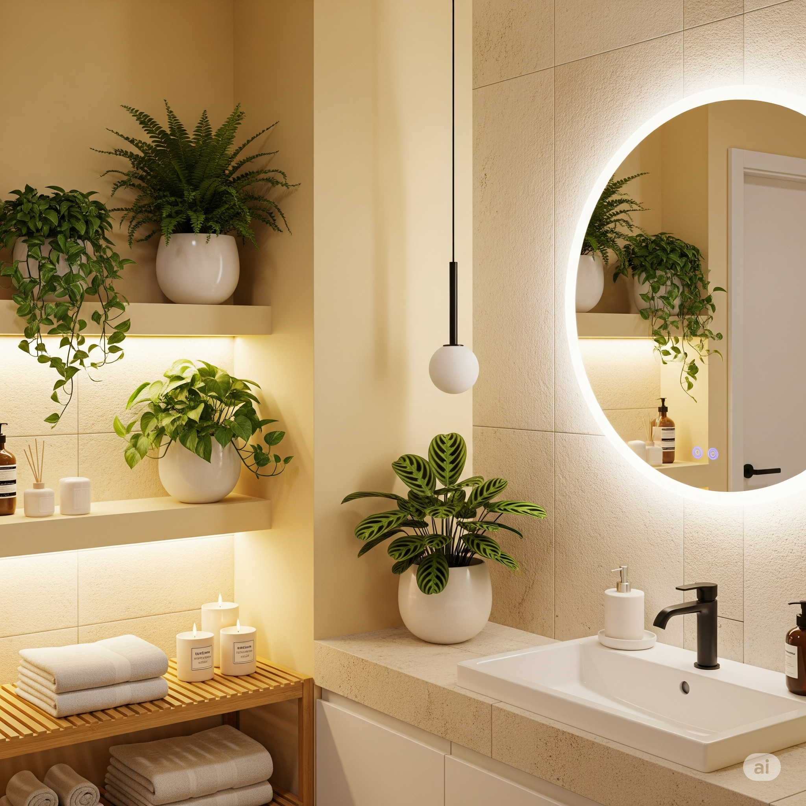

Ambientes verdes e seguros: como ter plantas em casa com gatos
Plantas têm o poder de transformar um lar. Elas trazem vida, cor, acolhimento — e cada vez mais estudos comprovam que ambientes verdes, mesmo os internos, têm efeitos reais na nossa saúde mental e emocional.
O que talvez você ainda não saiba é que é totalmente possível cultivar plantas mesmo com gatos em casa. Basta fazer escolhas seguras e posicioná-las estrategicamente.

De salas ensolaradas a banheiros úmidos, passando por escritórios com ar-condicionado, existe uma planta ideal para cada ambiente. A seguir, mostramos como integrar plantas seguras em três tipos de espaços reais — com fotos para inspirar.
🏠 Sala iluminada: charme natural e protagonismo
Salas com janelas amplas são perfeitas para plantas que gostam de luz difusa. Elas ajudam a compor um visual leve, aconchegante e cheio de vida.
Planta indicada: Pacová. Tropical, resistente e segura para gatos. Fica ótima próxima à janela ou ao lado do sofá.
💼 Escritório com pouca luz: conforto e produtividade
Home offices costumam ter luz artificial e ar-condicionado. Mas isso não é impeditivo para quem quer um cantinho verde e seguro para o pet.
Planta indicada: Peperômia. Tolera ar seco, baixa luminosidade e ainda é decorativa. Ideal para mesas, nichos e estantes.

🛁 Banheiro úmido: frescor tropical
A umidade constante do banheiro pode beneficiar plantas tropicais que amam vapor e clima estável.
Planta indicada: Samambaia. Segura para gatos e ideal para prateleiras ou cantos bem ventilados.

🌱 Bônus: a graminha que diverte
Graminha de milho ou trigo é uma opção funcional, barata e que seu gato vai adorar. Ajuda na digestão, reduz o estresse e ainda decora.
💡 Um lar mais verde é um lar mais leve
Segundo estudos publicados na Journal of Environmental Psychology e na Environmental Research, ambientes com elementos naturais estão associados a:
- Menor nível de estresse e ansiedade
- Melhor humor e redução de sintomas depressivos
- Mais foco e produtividade
- Melhoria na qualidade do ar e bem-estar geral
Esses efeitos não são exclusivos de florestas ou parques: até mesmo plantas em casa podem provocar esses benefícios.
Quer se aprofundar?
← Voltar para o blog